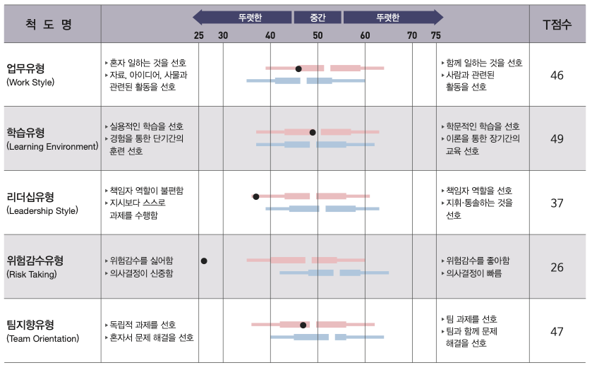

ABOUT ME

이름 | 이주희
나이 | 22살
희망 진로 | 웹 프론트엔드 개발자
이화여자대학교 휴먼기계바이오공학부 3학년 재학
1. MBTI
INFJ (I와 J성향이 강함)
특징
: 신중하고 완벽주의적 성향을 가짐.
장점
1. 꼼꼼하다. - 무슨 일을 하든 double check는 필수!
2. 무엇이든 기록해두는 습관이 있다. - 메모, 블로그 성실히 작성
단점
1. 지나치게 신중하다. - 결정하는데 시간이 다소 오래
걸리는 편.
2. 잡생각이 많다. - 너무 먼 일까지 미리 걱정하고 고민하여 스트레스에
쉽게 노출된다.
활용 및 개선방안
꼼꼼하다는 점과 평소 기록해두는 습관은
업무적인 실수를 최소화하고 성실함을 어필하는데 활용될 수 있다.
반면에 지나치게 신중하여 결정 시간이 오래 걸리는 점은, 원래의
마감기한보다 2~3일 일찍 마감하는 것을 목표로 삼아 보완하고 있다. 또한,
잡생각이 들 때는 베이킹과 같은 취미생활을 하거나 일부러라도 주변
사람들과 이야기를 하며 걱정을 해소하고자 노력하고 있다.
2. STRONG
전반적으로 흥미도가 낮게 나왔지만, 그중 가장 높게 나온 두 가지는 예술형과 탐구형이다.
개인 특성 척도
혼자 일하는 것을 선호하고, 책임자보다는 스스로 과제를 수행하는걸 선호하며, 위험감수를 매우 싫어하고 의사결정이 신중하다. 학습유형과 팀지향유형에서는 뚜렷한 방향성이 나타나지는 않았다.
